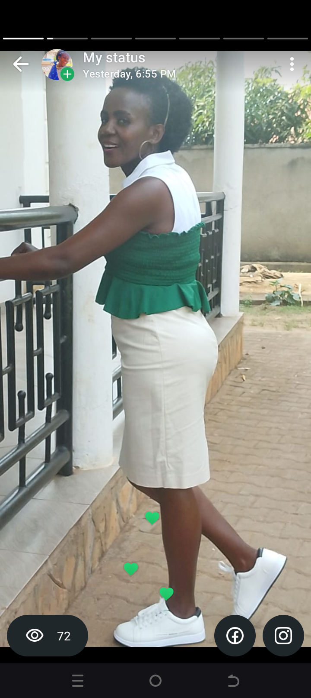

ALEXANDRINA LUTAAYA is my name, offering a bachelors'
of Library and Information science.
I have always had a postive interest
in studying BLIS such that i become
grounded as an information scientist.
Acquisition of this information science knowledge
will equip me with knowledge of working as a
librarian as well as lecturing of students
in the same department. Library and
archival works can be in educational
institutions, medical centers,
research centers as well as other
fields of work.
